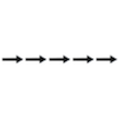
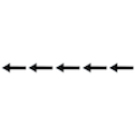

<!DOCTYPE html>
<html>
<head>
	<script src="https://ajax.googleapis.com/ajax/libs/jquery/3.4.1/jquery.min.js"></script>

	<script src ="jspsych-6.1.0/jspsych.js"></script>
	<script src="jspsych-6.1.0/plugins/jspsych-html-keyboard-response.js"></script>
	<script src="jspsych-6.1.0/plugins/jspsych-image-keyboard-response.js"></script>
	<link href="jspsych-6.1.0/css/jspsych.css" rel="stylesheet" type="text/css"></link>

    <link href="https://cdnjs.cloudflare.com/ajax/libs/toastr.js/latest/css/toastr.min.css" rel="stylesheet"/>
    <script src="https://cdnjs.cloudflare.com/ajax/libs/toastr.js/latest/js/toastr.min.js"></script>
	
</head>

<body>
	
</body>

<script>

    var timeline =[];
	var practice_instructions = {
        type: 'html-keyboard-response',
        stimulus: '<p>You will be shown a series of arrows on the screen,<br>pointing to the left or to the right. For example:<br></img><br>Press the RIGHT button if the CENTER arrow points to the right.<br></img><br>Press the LEFT button if the CENTER arrow points to the left.<br><br> Try to respond as quickly and accurately as you can.<br><br>Try to keep your attention focussed on the cross ("+") at the center of the screen.<br><br> First we will do a practice trial. Press the SPACEBAR to begin.</p>',
        choices: [32],

    }

    timeline.push(practice_instructions);

    var stimuli_images =[
    {stimulus: 'resource/examiner/flanker/adult/lllll.bmp', data: {test_part:'test', correct_response: 37}},
    {stimulus: 'resource/examiner/flanker/adult/llrll.bmp',data: {test_part:'test', correct_response: 39}},
    {stimulus: 'resource/examiner/flanker/adult/rrlrr.bmp',data: {test_part:'test', correct_response: 37}},
    {stimulus: 'resource/examiner/flanker/adult/rrrrr.bmp',data: {test_part:'test', correct_response: 39}}
    ];

    var fixation = {
        type: 'image-keyboard-response',
        stimulus: 'resource/examiner/flanker/adult/fixation.bmp',
        choices: jsPsych.NO_KEYS,
        trial_duration: 1000,
        data: {test_part: 'fixation'}
    }

    var test = {
    	type: "image-keyboard-response",
    	stimulus: jsPsych.timelineVariable('stimulus'),
    	choices:[37, 39],//left or right
        data: jsPsych.timelineVariable('data'),
        on_finish: function(data){
            if (data.key_press!=data.correct_response){
                toastr.error('Incorrect')
            }
            else{
                toastr.success('Correct')
            }
        }
    }

    var practice_procedure = {
    	timeline: [fixation, test],
    	timeline_variables: stimuli_images,
    	randomize_order: true,
        repetitions: 2
    }

    timeline.push(practice_procedure);

    var final_instructions = {
        type: 'html-keyboard-response',
        stimulus: '<p>Now we will ll move on to the task, the instructions are the same except you will no longer receive feedback after your responses.<br>Press the LEFT button if the CENTER arrow points to the left.<br>Press the RIGHT button if the CENTER arrow points to the right.<br>Remember to keep your focus on the center cross ("+") and try to respond as quickly as possible without making mistakes.<br>Press the SPACEBAR when you are ready to begin.</p>',
        choices: [32]

    }

    timeline.push(final_instructions);

    var test_main = {
        type: "image-keyboard-response",
        stimulus: jsPsych.timelineVariable('stimulus'),
        choices:[37, 39],//left or right
        data: jsPsych.timelineVariable('data')
    }

    var test_procedure = {
    	timeline: [fixation, test_main],
    	timeline_variables: stimuli_images,
    	randomize_order: true,
        repetitions: 12
    }

    timeline.push(test_procedure);

    var final_message = {
        type: 'html-keyboard-response',
        stimulus: '<p>The task is complete.</p>',
        choices: jsPsych.NO_KEYS,

    }

    timeline.push(final_message);


    jsPsych.init({
        timeline: timeline
    });

    //toastr
    toastr.options ={
    	  "closeButton": false,
		  "debug": false,
		  "newestOnTop": false,
		  "progressBar": false,
		  "positionClass": "toast-top-center",
		  "preventDuplicates": false,
		  "onclick": null,
		  "showDuration": "300",
		  "hideDuration": "1000",
		  "timeOut": "1000",
		  "extendedTimeOut": "1000",
		  "showEasing": "swing",
		  "hideEasing": "linear",
		  "showMethod": "fadeIn",
		  "hideMethod": "fadeOut"
    }

</script>

</html>
